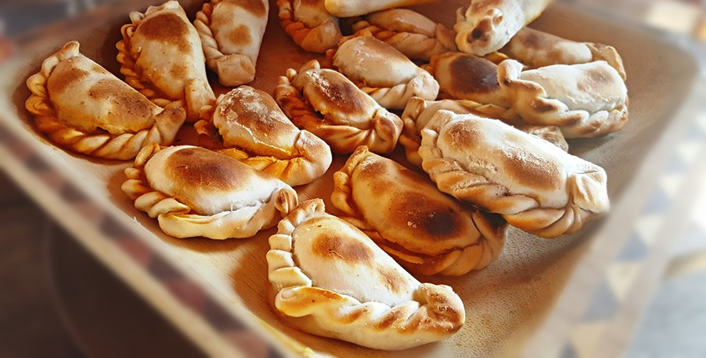
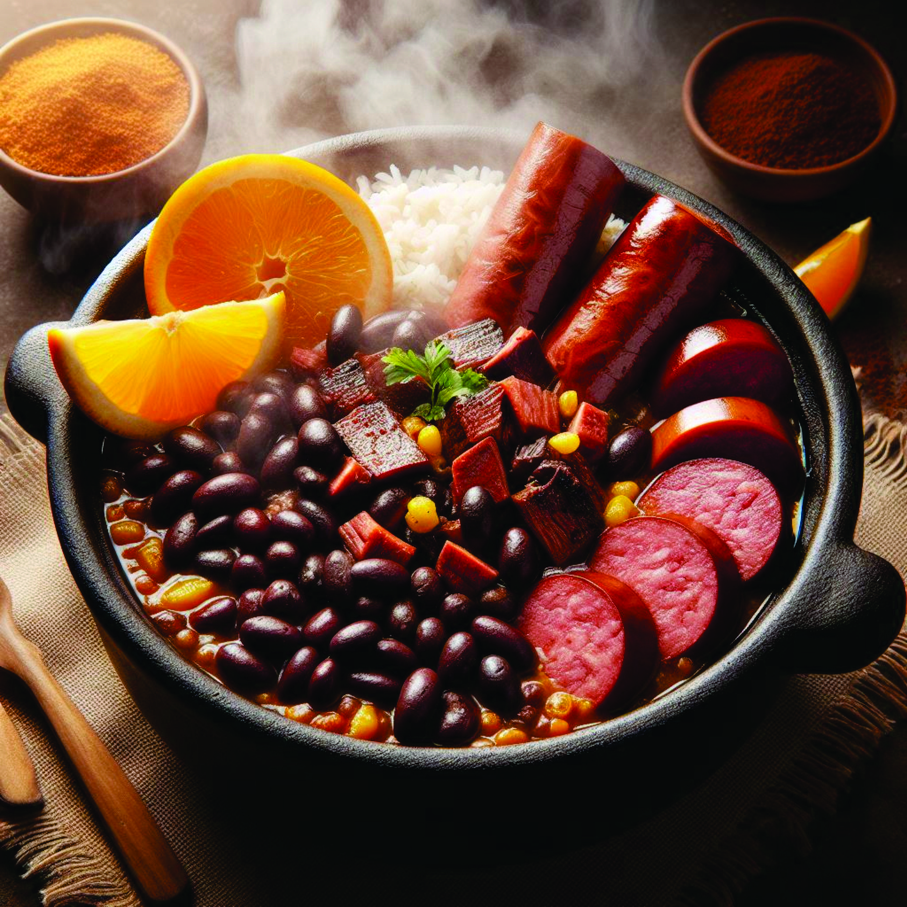
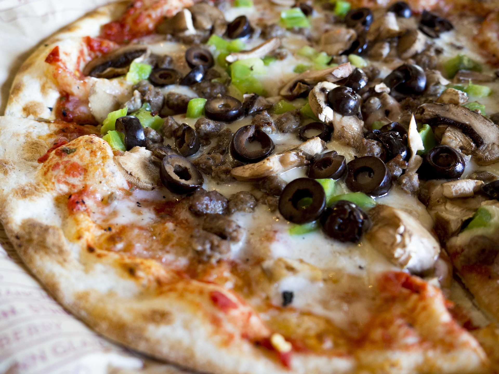

Nuestros Destinos
Argentina

Fusión de tradición criolla e influencia europea, la cocina argentina destaca por la calidad de sus materias primas y su calidez social. Desde el clásico asado a las brasas y las empanadas hasta las pastas y el dulce de leche, nuestros sabores reflejan la identidad de cada región del país.
Brasil

La gastronomía brasileña es el resultado de un vibrante encuentro entre las tradiciones indígenas, la herencia portuguesa y la fuerte influencia africana. Mundialmente famosa por su emblemática feijoada y el tradicional churrasco, la cocina de Brasil también conquista con sus frutas tropicales, el pão de queijo, los mariscos con leche de coco y el refrescante toque de la caipirinha. Cada plato celebra la alegría y la diversidad de su gente.
Italia

La gastronomía italiana es sinónimo de historia, familia y amor por los ingredientes frescos y de estación. Mundialmente celebrada por sus pastas artesanales, la auténtica pizza napolitana y sus risottos cremosos, la cocina de Italia también enamora con sus quesos, embutidos, el aceite de oliva y clásicos dulces como el tiramisú o el gelato. Cada receta es un homenaje a la sencillez y al placer de compartir la mesa.